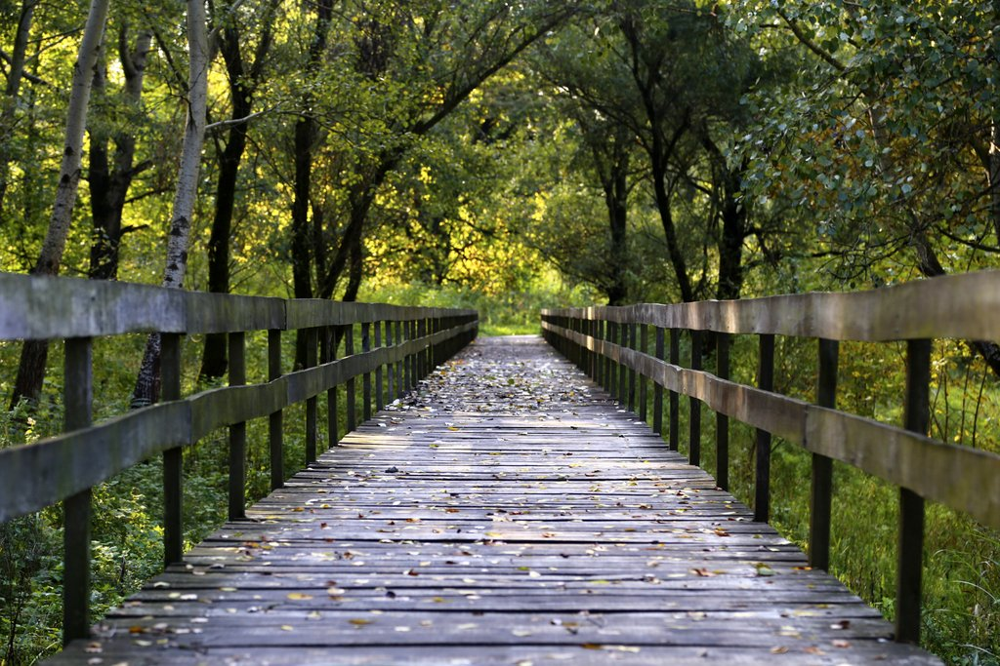
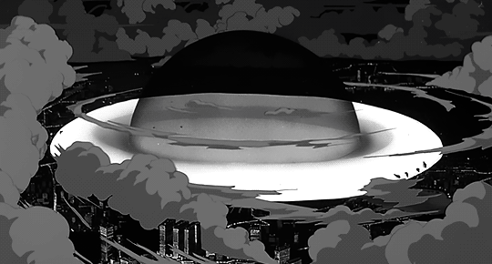
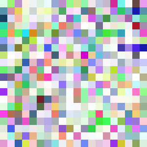

Patrik Tomšić
Opće informacije
Datum rođenja: 01.07.2003
Mjesto rođenja: Vukovar
Mjesto stanovanja: Osijek
Spol: Muški
Hobiji: Programiranje, gledanje filmova i serija, igranje videoigrica i nogometa
Obrazovanje
- Osnovna škola Blage Zadre
Davne 1969. godine izgrađena je škola koja je nosila naziv Osnovna škola „Bratstvo i jedinstvo“ i tada je brojila 949 učenika. Za vrijeme Domovinskog rata potpuno je uništena. Odlukom Ministarstva prosvjete i športa od 1994. utemeljena je Šesta osnovna škola Vukovar. Škola je obnovljena donacijom Bjelovarsko - bilogorske županije i sredstvima državnog proračuna te je predana na uporabu 25. rujna 2001. godine. U svibnju 2002. završeno je opremanje prostora škole. Odgojno - obrazovni rad počeo je 16. siječnja 2003. 16. listopada 2007. godine škola je preimenovana u Osnovnu školu Blage Zadre.
- Srednja škola
Godine 1925. Bata u Zlinu osniva večernju Batinu školu rada, a potom šalje trgovce i radnike iz Kraljevine Jugoslavije na školovanje, što se nakon otvaranja tvornice u Borovu nastavlja i za prve radnike. Prvi službeni tragovi o školi u Borovu datiraju iz 1936. godine, kada je odobrena Stručna produžna škola zanatskog smjera koja počinje s radom 1937./38. kao internatska, s trogodišnjim školovanjem uz istovremeni rad u tvornici. Godine 1940. odobrena je Srednja obrtničko-industrijska škola, a nakon Drugog svjetskog rata škola postaje Državna industrijska škola (DIŠ) s gumarskom, obućarskom i strojarskom strukom, da bi 1962. godine dobila naziv Obućarsko-gumarska tehnička škola. Tijekom desetljeća broj učenika raste s 400 na čak 7800 osamdesetih godina, uvode se nova zanimanja poput TV mehaničara, a škola već sedamdesetih godina prošlog stoljeća uključuje učenike s lakom mentalnom retardacijom, čemu se kasnije otvaraju odjeli i u drugim dijelovima bivše Jugoslavije. Devedesetih godina broj učenika pada na 4000, gase se gumarski i obućarski smjerovi, a otvara elektrotehnički smjer, da bi škola konačno 2005. godine u Republici Hrvatskoj dobila ime Tehnička škola Nikole Tesle Vukovar.
- FERIT Osijek
Fakultet elektrotehnike, računarstva i informacijskih tehnologija u Osijeku visoko je učilište u sastavu Sveučilišta Josipa Jurja Strossmayera u Osijeku.Godine 1987. Studij je, unatoč materijalnim i statusnim poteškoćama, upisan u registar znanstveno-istraživačkih organizacija, a sljedeće je godine preimenovan u Studij elektrotehnike.
Radno iskustvo
Studentski poslovi u IT sektoru, rad na web aplikacijama i održavanje sustava.
Izrada projekata u sklopu stručne prakse u tvrtci OG-CS Consultancy Services.
Vještine i Tehnologije
- HTML, CSS, JavaScript, PHP, React, NodeJS, Django, Spring Boot
- C, C++, Python, Java, Kotlin
- Rad s bazama podataka - MySQL, PostgreSQL, MongoDB
Galerija
JPG

GIF

BMP

PNG
AVIF

WEBP
RAW

SVG

Audio predstavljanje
Video MP4 - Promo Vukovar
Video izvor: PROMO SPOT GRADA VUKOVARA by Visit Vukovar || Uredio: Patrik Tomšić